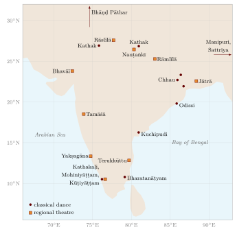
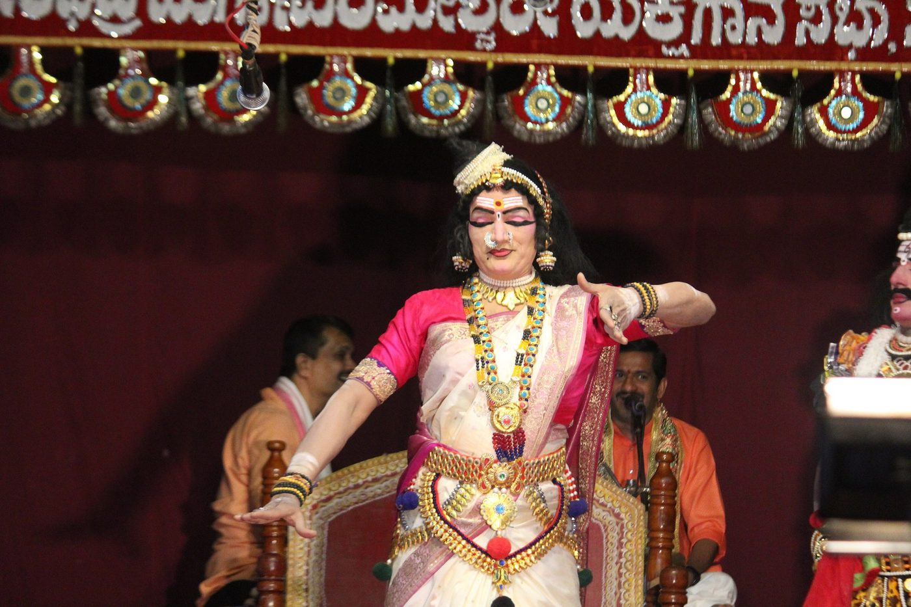
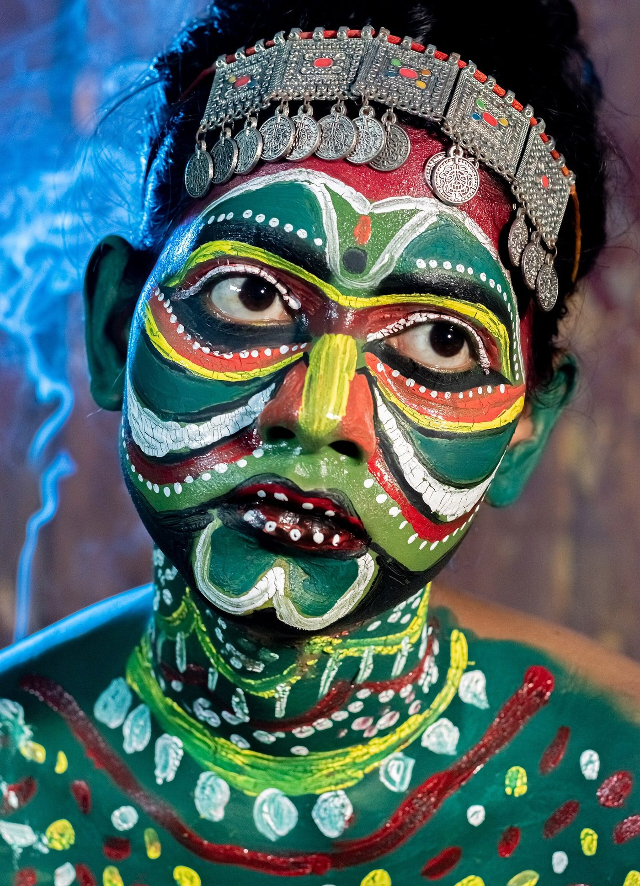
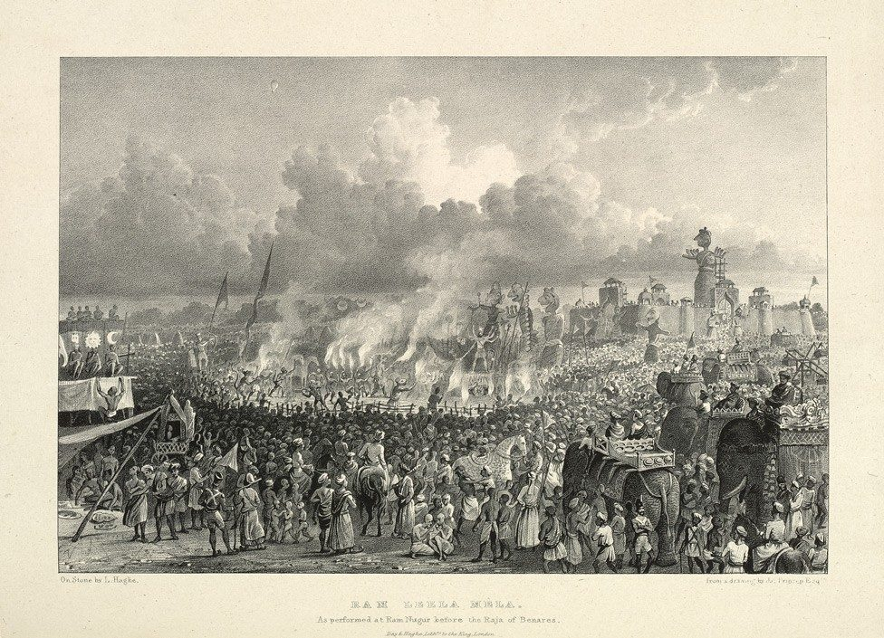

Chapter 20: Regional and Popular Theatres¶
From the late medieval period onwards each of India’s major languages developed theatres of its own. Most of them combine song, dance, narration and spoken dialogue; most are performed in the open air, often through the night, at festivals or fairs; and most were, until recently, the work of hereditary or professional troupes drawn from particular communities. They are usually called “folk” or “traditional” theatres, but neither word is quite right. Many have written texts, printed and sold in large numbers; many are professional and commercial; and several are not old, having taken their present forms in the nineteenth or twentieth century. What distinguishes them from the Sanskrit drama of the classical period (Chapter 19) is their use of the regional languages, their roots in particular religious movements and local patrons, and their audiences, which until the coming of cinema included most of the people of India.
Several regional theatres are described in other chapters: the dance-dramas of Kerala, Kathakaḷi and Kṛṣṇanāṭṭam (Chapter 18); the Kuchipudi and Bhāgavata Mēḷa dance-dramas of the Telugu tradition (Chapter 17); the aṅkīyā nāṭ of Assam (Chapter 18); the ritual theatres of Teyyam and Chhau and the bardic performances of the epics (Chapter 21); and the puppet theatres (Chapter 19). The theatres described here are the principal popular theatres of the other regions: Yakṣagāna of Karnataka, Terukkūttu of Tamil Nadu, Jātrā of Bengal, Tamāśā of Maharashtra, Nauṭaṅkī and its relatives in the north, Bhavāī of Gujarat and Bhāṇḍ Pāthar of Kashmir, the Rāmlīlā and Rāslīlā of the Hindi-speaking region, and several others. It ends with the performers themselves and with the place of these theatres in modern India.
20.1 The Regional Theatres at a Glance¶
Table 20.1 gives an overview of the forms discussed in this chapter (Richmond et al. 1990; Varadpande 1987), and Figure 20.1 places several of them, with the centres of the classical dances, on a map. They differ greatly in language, subject and style, but they share a family of features. Most of them have a figure who stands between the play and the audience — a singer-narrator, a director, a clown or a commentator — who introduces the characters, links the scenes and comments on the action. Most use music continuously, with a small ensemble of drums, cymbals and a melodic instrument; their texts are largely sung, and their actors must be singers. Most perform in an arena or on a simple platform, with the audience on three or four sides, and use few properties and little scenery. Most mix fixed text and improvisation: the songs are fixed, but the dialogue that expands them is made up afresh at each performance. And most, until the mid-twentieth century, were performed entirely by men, with female roles played by female impersonators, whose art was admired as one of the summits of the actor’s skill.
| Form | Region | Characteristics |
|---|---|---|
| Yakṣagāna | Coastal Karnataka | Dance-drama on epic themes; singer-narrator (bhāgavata); improvised dialogue; spectacular costume |
| Terukkūttu | Tamil Nadu | All-night street theatre on the Mahābhārata, linked with the cult of Draupadī |
| Jātrā | Bengal, Odisha, Assam | Popular musical theatre on mythological, historical and social themes; open-air arena |
| Tamāśā | Maharashtra | Popular theatre of song (lāvaṇī), dance and comic sketches |
| Nauṭaṅkī | Uttar Pradesh, Bihar, Punjab | Sung verse drama with the nagāṛā kettledrum |
| Svāṅg, Khyāl | Haryana, Rajasthan | Verse dramas with music, related to Nauṭaṅkī |
| Māc | Madhya Pradesh | Sung folk drama of the Malwa region |
| Bhavāī | Gujarat | Satirical sketches (veṣa) performed at festivals of the goddess |
| Bhāṇḍ Pāthar | Kashmir | Satirical theatre of hereditary performers |
| Rāmlīlā | North India | Enactment of the Rāmāyaṇa over many days, especially at Ramnagar (Varanasi) |
| Rāslīlā | Braj | Devotional dance-drama of Kṛṣṇa, performed by boy actors |
| Special Nāṭakam | Tamil Nadu | Musical drama by actors hired individually for each night |
| Pālā, Prahlāda Nāṭaka | Odisha | Sung narrative with chorus; devotional drama of Narasiṃha |
| Shumang Līlā | Manipur | Courtyard theatre of social comedy and satire |
| Ōṭṭan Tuḷḷal | Kerala | Solo sung and danced narration with social satire |

These theatres were never isolated from one another or from the classical arts. Their music drew on rāgas and tālas as well as on regional song; their gestures and dance often echoed the codified dance traditions of their regions; and their stories came from the epics and Purāṇas, from the devotional poetry of the saints and from regional romances and legends. In the nineteenth and twentieth centuries they borrowed from the Parsi and company theatres and from cinema, and in turn supplied cinema with actors, songs and conventions (Chapter 19).
20.2 Yakṣagāna¶
20.2.1 History and texts¶
Yakṣagāna (“song of the yakṣas”) is the theatre of coastal Karnataka, in the districts of Dakshina Kannada, Udupi and Uttara Kannada, with related forms in the plains of the Deccan. The word is found in Kannada and Telugu sources from about the sixteenth century, at first apparently as the name of a kind of song or sung composition. Its texts, called prasaṅgas (“episodes”), are verse plays in Kannada, composed in a range of song metres and set to named rāgas and tālas; several hundred survive, from the early modern period to the present, most of them on episodes of the Rāmāyaṇa, the Mahābhārata and the Bhāgavata Purāṇa, with later additions from regional legend and history. Since the late twentieth century plays have also been composed in Tulu, the language of much of the coastal audience (Ashton and Christie 1977).
20.2.2 Performance¶
A Yakṣagāna performance is directed by the bhāgavata, the singer who sits at the back of the stage, sings the verses of the prasaṅga, keeps time with small cymbals and controls the pace of the whole performance. With the drummers he forms the himmēḷa (“back ensemble”): the barrel drum maddaḷe, played with the hands, and the cylindrical drum ceṇḍe, played with sticks, together with a drone. The actors, the mummēḷa (“front ensemble”), dance to the sung verses and then improvise the spoken dialogue (arthagārike) that interprets them. The best actors are celebrated for their eloquence: a scene of a few sung verses can become, in their hands, an extended debate on duty, devotion or politics, and the audience comes as much for the argument as for the dance.
Costume and make-up classify the characters. Kings and heroes wear tall, elaborate crowns and wide jewelled breastplates; demons and other fierce characters wear make-up in strong colours and patterns and huge headdresses; women’s roles, until recently, were played by men in saris and jewellery (Figure 20.2); and a clown (hāsyagāra) provides comedy and links the scenes. Two main styles are distinguished: the northern (baḍagu tiṭṭu) of Udupi and Uttara Kannada, and the southern (teṅku tiṭṭu) of Dakshina Kannada and the neighbouring Kasaragod district of Kerala, with differences in dance, costume and drumming. The performance traditionally begins with preliminaries, including songs of invocation and dances by young performers, before the play proper begins late in the evening, and it continues until dawn (Ashton and Christie 1977; Richmond et al. 1990).


20.2.3 Troupes and patrons¶
The professional troupes (mēḷa) traditionally belong to temples, such as those of Kaṭīl and Dharmasthala, and perform through the dry season, from the end of the monsoon to its return. Most performances are sponsored by devotees as votive offerings in fulfilment of a vow, so that the same play may be offered to the deity by different families night after night in different villages. In the twentieth century commercial troupes began to perform in tents for paying audiences, introducing new plays, including plays based on films and on social themes, and the old relation between troupe, temple and devotee came to coexist with a market in tickets and stars. A seated, costume-free variant, tāḷamaddaḷe, consists entirely of sung text and improvised debate, and is valued as an art of eloquence in its own right. In recent decades women have begun to perform Yakṣagāna, both in mixed and in all-women troupes.
The form also attracted modern artists. The novelist Shivarama Karanth studied and experimented with Yakṣagāna, creating new productions for the modern stage; the director B. V. Karanth and others drew on it in the “theatre of roots” (Chapter 19); and a tradition of string puppetry in the Yakṣagāna style shows its influence on other forms. Martha Ashton and Bruce Christie’s study remains the fullest account in English of its technique and repertoire (Ashton and Christie 1977).
20.3 Terukkūttu¶
Terukkūttu (“street theatre”) is the all-night theatre of the villages of northern Tamil Nadu. Its performers prefer the name Kaṭṭaikkūttu, after the carved wooden ornaments (kaṭṭai) worn by the principal characters, and they reject “street” as a slighting description of an art that, in its own view, is a demanding discipline. The troupes are professional, made up of men from several non-Brahmin agricultural and artisan castes, and they perform mainly in the dry season, engaged by village festival committees (Bruin 1999).
The repertoire is dominated by the Mahābhārata, in versions derived from Tamil retellings of the epic, and its performance is bound up with the cult of the goddess Draupadī. In many villages of the region Draupadī is worshipped as a goddess, and her festival, lasting up to eighteen days, combines daytime recitation and exposition of the epic by a learned reciter with night-long kūttu performances of its episodes, in a sequence that follows the story from Draupadī’s marriage through the dice game and her humiliation to the war and the death of Duryodhana. Some episodes involve the whole village: in the play of Arjuna’s penance, the actor playing Arjuna climbs a tall pole, singing as he goes, and on the last day of the festival the death of Duryodhana is enacted beside a great clay image of the fallen king. Alf Hiltebeitel’s study of the Draupadī cult shows how the festival reinterprets the epic, making Draupadī its central figure and the Pāṇḍavas her devotees (Hiltebeitel 1988).
A kūttu performance begins with preliminaries behind a hand-held curtain and the entry of the kaṭṭiyakkāraṉ, the clown and master of ceremonies, who introduces the play, announces the characters and banters with the audience and the actors. The main characters make their entrance behind the curtain, which is lowered to reveal them in a burst of song and dance (Figure 20.3). The text consists of songs, sung by the actors and repeated by a chorus seated with the musicians, and of improvised dialogue in prose. The ensemble includes a harmonium, the double-headed mirutaṅkam, cymbals and the mukavīṇai, a small double-reed instrument. Richard Frasca’s study analyses the structure of performance in detail, and Hanne de Bruin’s work, based on long collaboration with the performer and teacher P. Rajagopal, shows how flexible the tradition is: its performers constantly adjust plays, music and dialogue to occasion and audience (Frasca 1990; Bruin 1999).


In the late twentieth century the form entered the modern theatre. The Chennai group Koothu-p-pattarai, founded by the writer Na. Muthuswamy in 1977, made the training and techniques of kūttu the basis of a modern theatre, and the Kattaikkuttu Sangam, founded in 1990 by Rajagopal and de Bruin, created a school in which young people, girls as well as boys, are trained in the form, a significant change in a tradition that had been the preserve of men.
20.4 Jātrā¶
Jātrā (from Sanskrit yātrā, “journey”, “procession”, “festival”) is the popular theatre of Bengal, with related forms in Odisha and Assam. Its roots lie in the devotional processions and performances of the Vaiṣṇava movement inspired by Caitanya in the sixteenth century; according to his biographers, Caitanya himself took part in a dramatic performance on the life of Kṛṣṇa. The older kṛṣṇa-yātrā of the eighteenth and early nineteenth centuries was a sung drama of Kṛṣṇa’s life, with long stretches of song and little action (Richmond et al. 1990).
In the nineteenth century, under the influence of the new urban theatres of Calcutta (Chapter 19), jātrā became a professional, commercial theatre, with more dialogue, more varied subjects and companies that toured the countryside. Its subjects expanded from mythology to history, romance and contemporary society. Performed in an arena with the audience on all sides, it combined declamatory, melodramatic acting with songs and an orchestra that opened the performance with an overture. Its characteristic figure, the Vivek (“conscience”), appears at moments of crisis to comment in song on the moral meaning of the action, and a chorus of singers once commented similarly from the sides. In the early twentieth century the poet-performer Mukunda Das (1878–1934) created a nationalist jātrā whose songs and plays, supporting the svadeśī movement, were banned by the colonial government, and later playwrights wrote jātrās on political and social subjects, from peasant struggles to events abroad (Richmond et al. 1990).
The modern jātrā is a large industry. Its companies, many with offices on Chitpur Road in north Kolkata, sign contracts with village organisers and festival committees and tour through the season, which runs from the autumn festivals until the monsoon. From the mid-twentieth century women began to replace the male actors who had played female roles, and microphones, electric lighting and recorded or amplified music changed the style of performance. Odia jātrā, with its own companies and repertoire, has a similar history. In Assam the “mobile theatre” (bhrāmyamān) companies, the first of which was founded in 1963, tour with tents, stages, lights and large casts, staging plays that range from Assamese history to adaptations of world drama and Hollywood films for audiences of several thousand a night; they are among the most successful popular theatres in India.
20.5 Tamāśā¶
Tamāśā (from a Persian word meaning “spectacle” or “entertainment”) is the popular theatre of Maharashtra. It took shape in the eighteenth and nineteenth centuries, in the period of the Peshwas and after, in the camps of soldiers and the towns of the Deccan, and its songs drew on the lāvaṇī, the erotic and topical song form brought to a high art by poets (śāhīr) such as Rām Joshī, Anant Phandī and Honājī Bāḷā, and on the powāḍā, the ballad of heroic deeds. Two kinds of performance developed. In the saṅgīt bārī, women singer-dancers perform lāvaṇīs for seated audiences in theatres and halls; in the touring ḍholkī-phaḍ tamāśā, named after its principal drum, a troupe presents an evening of songs, dances and comic scenes ending in a play (vag) (Paik 2022).
The ḍholkī-phaḍ performance follows a set order: an invocation to Gaṇeśa (gaṇ); the gavḷaṇ, a comic and erotic scene of Kṛṣṇa teasing the milkmaids on their way to market, in which the clown plays Kṛṣṇa’s companion; songs and dances; and the vag, a play on a romantic, historical or social subject. The songāḍyā, the clown, is the heart of the performance, commenting satirically on the action and on society. The ensemble includes the ḍholkī, the halgī frame drum, the one-stringed tuntuṇe, cymbals and harmonium.
The performers came largely from low-caste and Dalit communities, among them the Mahārs, Māṅgs and Kolhāṭīs, and the women performers bore the stigma attached to women who danced in public. The form became a battleground of caste and gender politics. In the 1930s and after, Ambedkarite troupes adapted its structure in the jalsā, replacing the erotic gavḷaṇ with songs of social reform and the message of Ambedkar, and in the 1940s and 1950s the Dalit writer Annabhau Sathe and the cultural troupes of the left used its forms in the movement for a united Maharashtra. At the same time Dalit leaders urged their communities to abandon performance that they regarded as degrading. Shailaja Paik’s study of Dalit women in Tamāśā shows how these women negotiated the charge of “vulgarity” that attached to their art, and how questions of caste, sexuality and respectability were fought out on their bodies (Paik 2022). Tamāśā remains popular in rural Maharashtra, and the lāvaṇī (Chapter 21) has entered the Marathi cinema and the concert stage.
20.6 Nauṭaṅkī and the Sung Theatres of the North¶
20.6.1 Nauṭaṅkī¶
Nauṭaṅkī, the subject of Kathryn Hansen’s major study, is a sung verse theatre of north India, with centres in western Uttar Pradesh and around Kanpur, and an audience across the Hindi-speaking region. It developed in the nineteenth century from the older svāṅg (or sāṅgīt), sung dramas performed in open arenas at fairs and festivals. Its name comes from one of the most popular stories of the repertoire, the tale of the princess Nauṭaṅkī, so delicate that she weighed only “nine ṭaṅks”, who was won by a young hero disguised as a woman (Hansen 1992).
The plays are written in a sequence of verse metres — above all the dohā, the caubolā and the daur — each with its own melodic treatment, and are sung by the actors in powerful, high voices that carry to large open-air audiences, punctuated by the thunder of the nagāṛā kettledrums. The drummer’s virtuosity is one of the pleasures of the form. Two styles developed: that of Hathras, associated with lineages of poets and performers organised in akhāṛās and with the writer and publisher Natharam Sharma Gaur, whose printed plays circulated widely; and that of Kanpur, associated with Shrikrishna Pahalwan and his company, which put more emphasis on prose dialogue and on dramatic action. The plays were printed in cheap chapbooks, sold at fairs and railway stations, and Hansen’s study of these texts shows a repertoire of romances (Lailā–Majnūṃ, Śīrīṃ–Farhād), legends of devotion and sacrifice (Rājā Hariścandra), tales of heroes and bandits (Sultānā Ḍākū) and, from the early twentieth century, nationalist and social themes (Hansen 1992).
Women began to perform in Nauṭaṅkī in the twentieth century. Gulab Bai of Kanpur (1926–1996) became its most famous actress and later ran her own company. Hansen shows how the theatre’s portrayal of heroic women, female impersonation and the presence of women performers allowed it to explore questions of gender, desire and honour, and how its stories of Hindu and Muslim heroes and its mixed Hindi–Urdu language reflected a shared popular culture that crossed religious lines. In the second half of the twentieth century the form declined in the face of cinema and video, and its companies increasingly turned to song-and-dance shows; it has been revived in adapted forms by urban theatre directors and by the National School of Drama (Hansen 1992).
20.6.2 Svāṅg, Khyāl and Māc¶
Nauṭaṅkī has close relatives. In Haryana the sāṅg (svāṅg) was given a large new repertoire in the early twentieth century by the poet-performer Pandit Lakhmi Chand (1903–1945), whose plays are still performed and whose songs are among the best-known in Haryanvi. In Rajasthan the khyāl (khel, “play”) developed regional styles, such as the Kuchāmaṇī, Shekhāwāṭī and Jaipurī, each associated with particular troupes and poets, with plays on Rajput heroes, saints and romances sung in powerful voices to drums. In the Malwa region of Madhya Pradesh the māc, performed on a high platform (māc, “stage”), developed in the nineteenth century around Ujjain, with plays on romantic and legendary themes. These forms share the sung verse, the open-air arena, the all-night performance and the drum ensemble of Nauṭaṅkī, and Hansen treats them as members of a single family of north Indian popular theatre (Hansen 1992; Varadpande 1987).
20.7 Satire and the Goddess: Bhavāī and Bhāṇḍ Pāthar¶
20.7.1 Bhavāī¶
Bhavāī, the theatre of Gujarat and parts of Rajasthan, is a sequence of short plays (veṣa) performed at night in village squares and temple courtyards, especially during the festival of the goddess at Navarātri. Its traditional performers, the Targālā (also called Bhavāiyā) and related communities, trace the form to a legendary founder, Asāita Ṭhākar, said to have been a fourteenth-century Brahmin who was outcasted for eating with a girl of a farming caste whom he had rescued from a powerful man, and who is credited by tradition with composing 360 veṣas. The story is a legend, but it expresses the performers’ sense of their own marginal status and their claim to a learned ancestry.
A Bhavāī performance opens with an invocation to the goddess and to Gaṇeśa, and its veṣas range from devotional and legendary episodes to sharp satire of social types: the miserly merchant, the corrupt official, the Brahmin, the foolish husband and the quarrelsome wife. A clown (raṅglo) comments and improvises; the music is dominated by the bhūṅgaḷ, a long copper trumpet, with drums and cymbals; and female roles are played by men. In the twentieth century Bhavāī was taken up by modern theatre-makers: the actress Dina Gandhi (later Pathak) won fame in the Bhavāī-based musical play Mena Gurjari, and Shanta Gandhi’s Jasma Odan (1968), produced for the National School of Drama, made the form known to urban audiences throughout India (Richmond et al. 1990; Varadpande 1987).
20.7.2 Bhāṇḍ Pāthar¶
The Bhāṇḍ Pāthar of Kashmir is the theatre of the Bhāṇḍs, a hereditary community of Muslim performers who also served as musicians and entertainers at weddings and festivals. Its plays (pāthar, from Sanskrit pātra, “character”) are satirical sketches of social types and rulers — landlords, officials, foreign masters — performed in the open air with dance and music, led by the surnāī (shawm) and drums, with improvised dialogue in Kashmiri. Plays such as the Angrez Pāthar, satirising the British, show the form’s long tradition of mocking the powerful. Like other hereditary performers of the region, the Bhāṇḍs suffered from the decline of patronage and from the conflict in Kashmir after 1989, and efforts to document and sustain their art have been made by cultural organisations in Kashmir.
20.8 Rāmlīlā and Rāslīlā¶
20.8.1 The Rāmlīlā of Ramnagar¶
The enactment of the Rāmāyaṇa as Rāmlīlā, based on Tulsīdās’s Hindi Rāmcaritmānas (late sixteenth century), takes place throughout north India in the weeks around the autumn festival of Dussehra. The most famous, at Ramnagar, across the Ganges from Varanasi, has been sponsored by the Mahārājas of Banaras since the early nineteenth century (Figure 20.4) and lasts about a month. It is one of the most remarkable theatre events in the world. The action moves through the town and its surroundings, where permanent sites represent Ayodhyā, Janakpur, Citrakūṭ, Paṃcavaṭī and Laṅkā, and the audience — thousands on the great days — follows the actors from place to place. The roles of Rāma, his brothers and Sītā are played by Brahmin boys who have not reached puberty; when they are in costume they are regarded as embodiments (svarūp) of the deities, and spectators bow before them. A priest-director (vyās) prompts the actors from the text, a group of chanters (rāmāyaṇī) sings the verses of the Rāmcaritmānas that each scene enacts, and the Mahārāja attends in state, on an elephant, as patron and as the representative of the king in the story (Kapur 1990; Schechner 1983).


Anuradha Kapur’s study of the Ramnagar Rāmlīlā examines its acting, in which the young actors speak their lines in a stylised, formal manner, and the way in which the performance makes the boundary between actor and god, theatre and worship, permeable; Richard Schechner’s essays describe the use of the whole town as an “environmental” theatre and the participation of the audience, among them the nemīs, devotees who attend every day of the cycle (Kapur 1990; Schechner 1983). Elsewhere Rāmlīlā takes many forms: neighbourhood productions on temporary stages organised by local committees, the great public Rāmlīlās of Delhi, and dance-drama versions created for the concert stage, among them that of the Shriram Bharatiya Kala Kendra in Delhi, performed annually since 1957. Indian emigrants took the Rāmlīlā to the Caribbean, Fiji and elsewhere, where it remains an important expression of community identity. UNESCO proclaimed the Rāmlīlā a Masterpiece of the Oral and Intangible Heritage of Humanity in 2005 and inscribed it on its Representative List in 2008.
20.8.2 The Rāslīlā of Braj¶
The Rāslīlā of Braj, the region around Mathura and Vrindavan, enacts the love and play of Kṛṣṇa with Rādhā and the cowherd women. Its troupes are led by a svāmī (rāsdhārī), a Brahmin who directs the performance and owns the costumes, and its actors are Brahmin boys who play Kṛṣṇa, Rādhā and the cowherd women. A performance has two parts. The rās is a circular dance of Kṛṣṇa and the gopīs, with songs from the devotional poets of Braj, which presents the eternal, unchanging play of the god; the līlā that follows enacts a particular episode, such as Kṛṣṇa’s theft of butter or his quarrel with Rādhā, in song and improvised dialogue. As at Ramnagar, the boys in costume are treated as svarūps, and devotees touch their feet. Braj tradition traces the form to the Vaiṣṇava revival of the sixteenth century, naming several saints as its founders; Norvin Hein’s study, based on fieldwork in the 1940s and 1950s, remains the classic account of the Rāslīlā and of the other religious plays of the Mathura region, from the Rāmlīlā to the tableaux (jhāṃkī) of the festivals (Hein 1972).
20.9 Other Popular Theatres¶
20.9.1 The Special Drama of Tamil Nadu¶
The “company drama” of the early twentieth century (Chapter 19) left a popular descendant in the Tamil countryside: the Special Nāṭakam or “Special Drama”, so called because its actors are engaged “specially” for each performance rather than belonging to a permanent company. Organisers of temple festivals and family celebrations book the actors individually, through actors’ associations based mainly in Madurai and other towns of southern Tamil Nadu; actors who may never have performed together meet on the night and perform, without rehearsal, one of a small number of standard plays — among them Vaḷḷi Tirumaṇam, the marriage of the god Murukaṉ to the tribal girl Vaḷḷi, and Hariścandra — whose songs, scenes and conventions they all know. The performance, which lasts through the night, opens with a long comic scene between a male clown (the “Buffoon”) and a female dancer, full of bawdy repartee and topical jokes, and continues with the play, in which songs in rāga-based Tamil styles alternate with improvised dialogue.
Susan Seizer’s ethnography of Special Drama artists shows how the actors, and above all the actresses, live with the stigma that attaches to people who perform on stage, especially women who perform in public at night and travel with men who are not their relatives. She describes the strategies by which actresses protect their respectability offstage — in how they travel, dress and speak — and the ways in which the comic scenes on stage both exploit and comment on the moral anxieties of the audience (Seizer 2005). Her work is one of the best studies of the social life of popular theatre performers in modern India.
20.9.2 The Konkan and the Deccan: Daśāvatāra and Gondhaḷ¶
On the Konkan coast of Maharashtra and in Goa, the Daśāvatāra (“ten incarnations”) is a theatre of temple festivals, performed through the night by troupes of male actors who tour the villages in the dry season. Its first part is a fixed preliminary sequence in which Gaṇeśa, the goddess Sarasvatī and other deities appear and dance, interrupted by a comic demon who provides the evening’s first laughter; its second part is a play (ākhyān) on an episode from the Purāṇas, usually one involving an incarnation of Viṣṇu, performed with songs to harmonium and drums and with improvised dialogue in Marathi or Konkani. The actors bring their own costumes and make-up, the female roles are played by men, and the dialogue is created afresh at each performance within the frame of a known story, much as in Yakṣagāna to the south.
The gondhaḷ of Maharashtra and the Deccan is a ritual performance in honour of the goddess — Tuḷjā Bhavānī of Tuljapur, Reṇukā of Mahur and others — performed at night after a wedding or another family ceremony by hereditary performers of the Gondhaḷī community. A lead singer, with companions playing the saṃbaḷ drum and the one-stringed tuntuṇe, invokes the goddess before a lamp and a sacred pot, and then narrates a story (ākhyān) in song and speech, with humour and topical comment. It stands between ritual and theatre: its purpose is the worship of the goddess on behalf of the family, but its narrative and its comedy make it one of the popular entertainments of the region, and its songs to the goddess have entered the wider repertoire of Marathi devotional and popular music.
20.9.3 Odisha: Pālā, Daskathia and Prahlāda Nāṭaka¶
Odisha, besides its jātrā, has several distinctive forms of narrative and dramatic performance. The pālā is a sung narrative performed by a lead singer (gāyaka) with a chorus (pāliā) who play cymbals and a drum; it is associated with the worship of Satya Pīr or Satyanārāyaṇa, a figure revered by both Hindus and Muslims, and its singers are prized for their learning, quoting Sanskrit and classical Odia poetry, and for their wit in the comic exchanges with the chorus. In the daskathia, two performers, a singer and his companion, narrate devotional stories with song and with the rhythm of wooden clappers (kāṭhi) held in the hand. The Prahlāda Nāṭaka of southern Odisha, centred on the Ganjam district, enacts the story of the demon king Hiraṇyakaśipu, his devotee son Prahlāda and the man-lion avatar Narasiṃha, with songs in the rāgas of Odissi music, on a stage dominated by a tall structure representing the demon king’s throne; its text is attributed to a nineteenth-century local ruler. Their music draws on the same regional repertoire of rāgas and songs as the Odissi music that accompanies the classical dance of the region (Chapter 17).
20.9.4 Shumang Līlā¶
In Manipur, the Shumang Līlā (“courtyard play”) is a popular theatre of social comedy, satire and melodrama performed in the courtyards of houses and in open spaces, with the audience on all sides and almost no scenery. It developed in the twentieth century from earlier comic entertainments, and its troupes are traditionally single-sex: in the all-male troupes men play the women’s roles, and in all-female troupes women play the men’s. Its plays deal with family life, social problems and politics, and it has been an important medium of public comment in a state where the political situation has often been tense. The more formal, proscenium-based Manipuri theatre that produced Heisnam Kanhailal and Ratan Thiyam (Chapter 19) grew up alongside it.
20.9.5 Ōṭṭan Tuḷḷal¶
In Kerala, the eighteenth-century poet Kuñcan Nampyār created tuḷḷal, a solo form in which a performer in colourful costume and make-up sings and dances Malayalam verse narratives, accompanied by a singer, a drummer and a cymbal player. A traditional story says that Nampyār, a temple drummer, invented it after being mocked by a Cākyār for falling asleep while accompanying a Cākyār kūttu (Chapter 19), and that he set out to draw the audience away from his rival. Whatever the truth of the story, tuḷḷal is a popular counterpart to the learned Sanskrit theatre: it uses everyday Malayalam, tells stories from the epics and Purāṇas, and fills them with satire of contemporary society, including Brahmins, rulers and the foibles of every caste. Three forms are distinguished by costume and metre (ōṭṭan, śītaṅkan and paṟayan), of which ōṭṭan tuḷḷal is the most popular.
20.10 Performers, Patrons and the State¶
The regional theatres were sustained by particular social arrangements, and their recent history reflects the changes in those arrangements. Their performers were mostly hereditary specialists or members of particular castes and communities, many of them low in the caste hierarchy, and acting, like dancing in public, often carried social stigma. Their patrons were temples, landlords, merchants, village committees and devotees fulfilling vows, and the economics of performance ranged from ritual obligation to straightforward commerce. Female impersonation was a respected art: the female impersonators of Yakṣagāna, Nauṭaṅkī and the Parsi theatre, like Bal Gandharva on the Marathi stage (Section 11.7), were stars, and their departure from the stage when women began to perform was experienced in some traditions as a loss as well as a liberation.
From the 1950s the state took an interest in these theatres. The Sangeet Natak Akademi organised festivals and seminars on “traditional” and “folk” theatre and supported troupes and training; the Song and Drama Division of the central government’s Ministry of Information and Broadcasting, established in 1954, employed folk performers to carry messages about development, health and family planning to rural audiences, often in the forms of Nauṭaṅkī, Jātrā, Tamāśā or Burrakatha; and the “theatre of roots” movement of the 1970s and 1980s drew on regional forms to create a national modern theatre (Chapter 19). These interventions brought money and recognition, but they also raised questions — discussed by Rustom Bharucha and others — about who controls a tradition, about the selection of particular forms as representative of a region, and about the transformation of community performance into staged “heritage” (Bharucha 1993; Dharwadker 2005).
The greatest change, however, came from cinema, television and video, which from the 1950s onwards took over much of the audience and many of the functions of the popular theatres. Some forms declined sharply; others, such as Jātrā, the mobile theatre of Assam, Yakṣagāna and Tamāśā, adapted, adopting amplification, electric light, new repertoires and new business models, and remain large popular institutions. The regional theatres are therefore not survivals from an unchanging past but living, commercial and constantly changing arts, whose history over the last two centuries is as much a part of the history of Indian theatre as the Sanskrit drama of the first millennium.
Further Reading¶
Richmond et al. (1990) is the best general introduction to India’s regional theatres, Varadpande (1987) gives a general history, and Lal (2004) is a reference companion with entries on most of the forms. On particular forms see Ashton and Christie (1977) (Yakṣagāna); Frasca (1990), Bruin (1999) and Hiltebeitel (1988) (Terukkūttu and the Draupadī cult); Hansen (1992) (Nauṭaṅkī and the sung theatres of the north); Paik (2022) (Tamāśā and Dalit women); Seizer (2005) (the Tamil Special Drama); Kapur (1990) and Schechner (1983) (the Ramnagar Rāmlīlā); and Hein (1972) (the religious drama of Braj). Bharucha (1993) and Dharwadker (2005) discuss the place of traditional forms in modern Indian theatre.